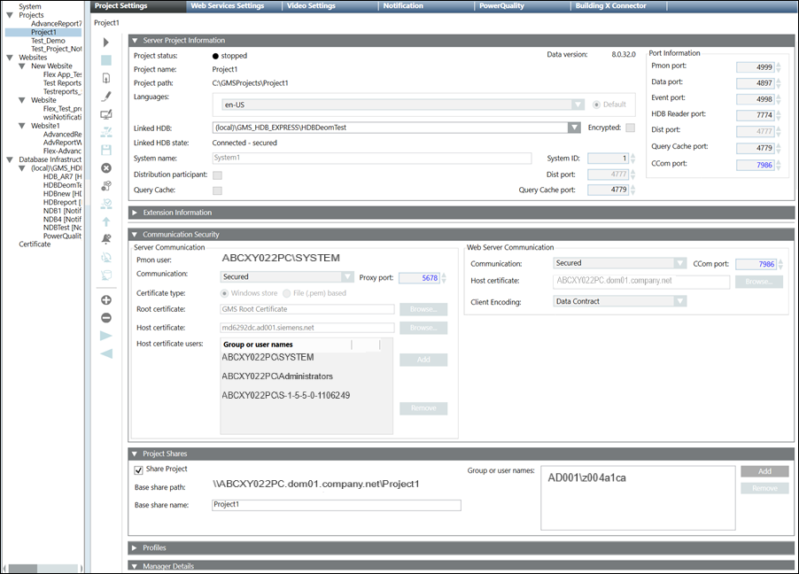

Modify the Server Project Parameters
You can edit the Server project parameters to modify the port number, languages and so on. It also allows you to secure the Client/Server Communication, share the Server project folder.
- At least one project is available under the Projects root folder and it is
Stopped.
- In the SMC tree, select Projects > [project].
- Click Edit
 .
. - Some fields of the Server Project Information and Communication Security expanders are enabled.
- In the Server Project Information expander modify the following parameters:
- Edit the port numbers for the Pmon, Data, Event, HDB Reader setting according to the given range and making them unique.
- In the Communication Security expander, provide the edit the details as required:
- Modify the default Server Communication mode to Secured for enabling a secure communication between Client/FEP and the Server project.
- Make sure that the Proxy port, used to establish the secure communication between Client/Server, has unique port number. The default Proxy port number is 5678.
- Certificate type is displays the default Windows store and is enabled only when you change the client/server communication type to Secured. The default set Root certificate and Host certificate are displayed.
- Add the Server project’s Pmon user in the Host certificate users ensuring it has rights on the Server host certificate’s private key.
- In the Project Shares expander, provide the details as follows:
- Select the Share Project check box to share Server project. This automatically sets the Base share name as the project name, which is appended to the shared project path, that is set when you save the changes.
- Click Add to add the Client/FEP logged-in user using the Select User or Group dialog box to the list of Group or user names.
- Click Save
 .
. - If you have changed the security settings including the Server Communication mode, Proxy port, Certificate type and so on once you have established Client/Server connectivity, a message displays indicating you that you must realign the Client/FEP project linked with the modified Server project.
- If you have changed machine name then edit the project to synchronize the Pmon user, create a new certificate, import it and set the certificate as default.
